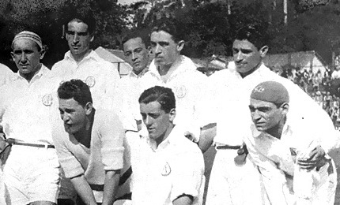

Fundado em 25 de janeiro de 1930 e marcado por histórias de superação, como a refundação do clube em 1935 ou os tempos difíceis da construção do Morumbi, o Tricolor Mais Querido do planeta é o único clube brasileiro a ter conquistado a América e o Mundo por três vezes. É ainda o único Tricampeão consecutivo do Campeonato Brasileiro e o primeiro a conquistá- lo por seis vezes. Tri-Hexacampeão Brasileiro.
Dentro das quatro linhas, foi vestindo o Manto Tricolor que o goleiro Caxambu inventou a ponte, que Roberto Dias tornou-se o maior marcador de Pelé, que Raí e Telê comemoraram a vitória sobre o Barcelona, que Müller marcou o gol que fez o italiano Costacurta perder o rumo de Milão, que Rogério Ceni passou a ser o Maior Goleiro Artilheiro do Mundo, além de tantos outros grandes momentos da gloriosa trajetória são-paulina!
Hino do
São Paulo
Futebol Clube
Coro:
Oh Tricolor Clube bem amado As tuas glórias Vêm do passado
São teus guias brasileiros Que te amam ternamente De São Paulo tens o nome Que ostentas dignamente
[Coro]
São Paulo, clube querido Tu tens o nosso amor Teu nome e tuas glórias Têm honra e resplendor
[Coro]
Tuas cores gloriosas Despertam amor febril Pela terra Bandeirante: Honra e Glória do Brasil
[Coro]
Clube
Athlético
Paulistano

O São Paulo FC é dentre os grandes não apenas o primeiro, como diz o hino
são-paulino, mas também o mais jovem. A grande saga do Tricolor
começou, porém, quando o futebol ainda engatinhava no Brasil, com a
fundação do clube mais vitorioso da era amadora do esporte: o Club
Athlético Paulistano.
Tradicional e ainda em funcionamento na zona mais nobre da cidade, o
CAP surgiu do desejo por um clube verdadeiramente brasileiro e que
representasse a cidade de São Paulo por completo. Até então, o futebol era
praticado somente por clubes de imigrantes, basicamente de ingleses ou
alemães. O Paulistano nasceu na Rotisserie Sportsman (Rua São Bento, nº
61), em 29 de dezembro de 1900.
O tempo passou e o futebol se modificou. O clube tinha fortes raízes
amadoras e rejeitava o “profissionalismo marrom” de meados dos anos 20.
Para o Paulistano, o jogador deveria vestir a camisa por paixão, por
fidelidade, sendo sócio do clube. Ou seja, na prática, deveria pagar ao clube,
e não o contrário.
Assim, em 8 de janeiro de 1930, o Club Athlético Paulistano - o maior clube
de futebol de então - vê sua Liga ser oficialmente dissolvida em assembléia
e abandona a modalidade.
Nem todos os dirigentes, sócios e jogadores concordaram com a decisão, e
os descontentes foram em busca de uma solução junto a outro tradicional
clube da capital, a Associação Athlética das Palmeiras.
Rogério Ceni
“O São Paulo não é somente um emprego, é minha vida”
Maior goleiro artilheiro do mundo, atleta exemplar, campeão mundial com a Seleção Brasileira,
bicampeão
mundial e da Libertadores, tricampeão brasileiro, capitão e líder incondicional do esquadrão
tricolor,
Rogério Ceni é a síntese do espírito são-paulino: competente, exigente, obstinado e
vencedor.
O M1TO são-paulino deixou os gramados em 11 de dezembro de 2015, em uma noite memorável, mas está
eternizado não apenas na história do São Paulo Futebol Clube, mas nos corações dos milhões de
torcedores
que acompanharam seus 25 anos de dedicação pelo clube. Uma trajetória que começou em 1990, aos 17
anos,
nas categorias de base do Tricolor, e logo extrapolou os limites do Morumbi para bater marcas
planetárias.